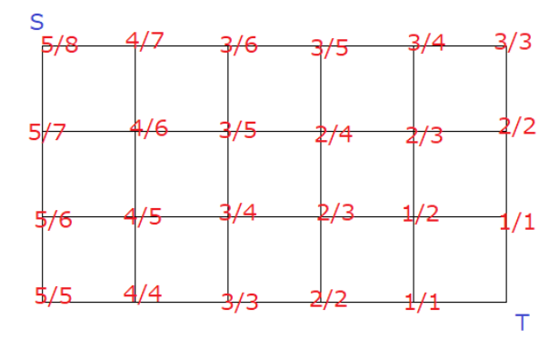

Ice Cream Store
贪心
Reverse and Compare
考虑 $rev(l, r)$， 如果 $s_l = s_r$ 则等价于 $rev(l + 1, r - 1)$, 那么答案就是 ${n\choose 2} - \sum {count(c) \choose 2}$
|
|
Fountain Walk
注意到走圆上肯定比走直线优，按行排序求lis即可，注意特判lis为$\min(|x_2 - x1|, |y2 - y1|) + 1$。
|
|
Shift and Flip
假设 $B$ 中至少有一个 $1$, 我们设计数器 $t$ 表示Shift的值，即最终 $a_i = b_{(i + t)\bmod n}$
设整个过程中的 $t_{\min} = l, t_{\max} = r$, 最终为 $d$, 现在将问题转化为判定这个 $(l, r, d)$ 是否合法
$a_i$ 在这个过程中对应上$b_{(i + l) \bmod n} \sim b_{(i + r) \bmod n}$，每个$a_i\neq b_{(i + d) \bmod n}$ 的 $i$ 对应区间都中有一个 $1$, 那么这个 $(l, r, d)$ 合法。
接着考虑对于一组合法的 $(l, r, d)$ 求出最少操作次数，shift的次数肯定是 $2(r - l) - |d|$ ，因为我们可以shift到 $d$ 另的一侧，再shift到 $d$ 的这一侧，再shift回到 $d$
优化这个做法，设 $d \ge 0$, 枚举 $d$ 的取值，若 $b_i \sim b_{(i + d) \bmod n}$ 均存在一个 $1$，那么我们直接shift $d$ 即可。否则设 $x_i$ 为 $i$ 左侧第一个 $1$, $y_i$ 为 $(i + d)\bmod n$ 右侧第一个 $1$, 设 $X = l, Y = r - d$, 我们需要对于所有的 $i$ 都存在有 $(X\ge x_i \vee Y \ge y_i)$ 成立，且最小化 $X + Y$
排序后扫描即可，复杂度 $O(n^2\log n)$, 实际上xjb算算就是 $O(n^2)$ 的
|
|
Shuffle and Swap
$a_i \to b_i$ 连有向边，此时图上会有若干环和若干链，忽略所有的环。
对于一条链 $p_1 \to p_2 \ldots \to p_t$, 交换前 $a_{p_1 \sim p_{t - 1}} = 1, a_{p_t} = 0$, 且 $b_{p_2 \sim p_{t}} = 1, b_{p_1} = 0$，我们希望能把 $0$ 从 $a_{p_{t}}$ 移动到 $a_{p_1}$, 这个对应方案唯一
设原数列满足 $A_i = B_i = 1$ 的有 $x$ 个, $A_i = 1, B_i = 0$ 的有 $y$ 个，此时 $A_i = 0, B_i = 1$ 的也有 $y$ 个，我们会得到一个 $x + y$ 条边， $y$ 条链的图。
哪只要算造链的方案数即可。$f(i, j)$ 表示前 $j$ 个链，用了 $j$ 个点的方案数
可以轻易得出转移，卷积优化即可。最后答案就是 $\sum f(y, i) x! y! * (x + y) !$
|
|
Yes or No
对于一个有 $m$ 个问题, 其中 Yes or No 较多的一个为 $n$ 个时，期望答对就是 $\frac{n}{m}$。
设一个矩阵 $G(i, j), i \in [0, n], j \in [0, m]$, 以 $G(i, j)\to G(i, j + 1)$ 表示答一个No，$G(i, j) \to G(i + 1, j)$ 表示答一个Yes， $G(i, j)$ 的点权为对应的期望。从左上角 $S$ 走到 $T$ 的期望路径长度就是答案。
剩下的不想编了。
剩下的我打算重新编

就是上面这个图，左下为 $(0, 0)$，向右上画一条 $45$ 度的对角线，不穿过对角线一定是 $n$, 否则会对答案有 $\frac 1 2$ 的概率产生 $1$ 的贡献，枚举对角线上的点 $\min(n, m)$ 个，求总方案数即可。即 $\sum_{i = 1} ^ {m} {i + i\choose i}{n - i + m - i\choose n -i}$
|
|